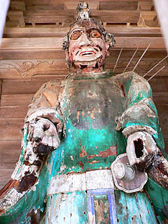

参考；ザシキワラシの見えるとき 川島秀一著
2005.4.
遠野物語の舞台岩手県遠野市。 ここでザシキワラシを祀るざしきわらし祈願祭という祭りがある。 ザシキワラシは岩手県を中心に古くから伝わる子供のラッキーゴッドである。このザシキワラシの走る音や声を聞いたりするとその家は栄えると伝えられている。現代のワンルームマンションでこんな事が起きたら、それは「呪怨」になっちゃうが、遠野の古い豪農の家などを訪れると、そういう事もあるのかも、という気がして来る。ある意味のどかな時代を象徴する神様である。 このザシキワラシ、金田一温泉の旅館が有名だが、遠野地方でもザシキワラシ信仰が盛んだ。 そんな遠野の早池峰神社（はやちねじんじゃ）でざしきわらし祈願祭は行われている。 そもそもザシキワラシって祀ったりするものなのだろう？で、一体どんな人が何をするんだろう？ その実体を見るべく早池峰神社へと行ってみた。 早池峰神社とは遠野市の北にそびえる霊峰早池峰山を祀る神社で、その歴史は大同元（806）年にまでさかのぼると云う由緒正しき神社である。よく遠野のガイドブックやポスターに登場する朽ちかけた鳥居はこの早池峰神社の鳥居だが、実際にはこの鳥居から数キロ北の山中にある。 門のような造りの拝殿を潜り本殿に行くと、狭い本殿の中には早くも数十人もの参拝者が隙間もなく座って祈願祭が始まるのを待っている。 で、外から覗かせてもらいました。スペース的にとても中に入り込めそうもないが、それ以上にかなり真剣な雰囲気満点、いいかえれば秘密結社みたいな物凄く濃い〜雰囲気なのでとても門外漢の私なぞ入れる雰囲気ではなかったです。 本殿の両サイドの壁面には巨大な鉄の剣が奉納されている。早池峰山の山頂にはこれより大きな剣が逆さまに刺さっているらしい。 見てみたかったが、日本百名山にカウントされる程の山なので私のようなヘタレがお気楽に登れる筈もない。 ところで。 実はこのざしきわらし祈願祭というものは昔からあった行事ではないのだ。 きっかけはある人物が昭和58年に遠野を訪れた事から始まる。新潟で事業を営む人物が早池峰神社を参拝した帰り、ザシキワラシが車に乗って一緒に来てしまったと言う。勿論その後、実業家氏の事業は繁盛。早池峰神社に多額の寄付をしたという。その寄付が契機となり、ついに昭和63年にざしきわらし祈願祭が行われるようになったのだ。始まってからまだ20年足らずの新しい祭なのだ。 それにしても昭和の末にこのような話があった事自体、さすが遠野といえよう。 さて、この祭りで一番気になったのはザシキワラシってどんな姿をしているのか、ということである。 もともと姿が見えず、音や気配だけが感じられる存在であったザシキワラシだが、それではビジュアル的に弱いと考えたのだろうか。 何とな〜く坊ちゃん刈りの男の子というイメージがあったのだが・・・ 何とここのザシキワラシは女の子の人形でした！ 人形はザシキワラシ専用の人形なのか、いわゆる人形屋さんに売っている普通のお人形なのか良く判らなかったが、胸元にお守りのようなお札があるのがポイントだ。 中央の机には赤い着物（全部同じ着物）を着た人形が10体並んでおり、蝋燭の妖しげな炎に照らされている。 薄暗い堂内に大勢の人が赤い着物を着た人形の前に座って固唾を呑んでいる光景。そこには新しい祭りとはいえ東北の信仰世界の神髄を見たような気がした。 ちなみに左右には箱入り娘が数十体。こちらは様々な色の衣装を身に付けており、後から奉納された物と思われる。 そうこうしている内に参拝者の代表と思しき人が一通り挨拶をした後、神主が入場し、いよいよ祈願祭が始まった。 いわゆる神社で行われる通常の神事と同じように祝詞をあげ、時々幣束を振っている。 この祭りの性格はザシキワラシ人形の魂の入れ替えである。 まず、ザシキワラシが自分の家に居ると感じた人がここに出向いて人形を授けてもらう。その後、ざしきわらし祈願祭に人形を持って来て魂を入れ替えるのである。このように各家庭で祀られている神様を年に一度持ち寄り、集団で祭祀するのは青森の久渡寺で行われているオシラサマ講と同じパターンだ。久渡寺のオシラサマ講がここのざしきわらし祈願祭に直接影響しているのかどうか、判断する術もないが、どこか東北の民間信仰全般に通ずる宗教におけるパーソナルとパブリックの関係が垣間見えるような気がする。 神事自体はさして珍しくもないので、祝詞が続く間、少し周りの様子を見る事にする。 本殿横にある金勢様。遠野には金勢様が多いように思えるが、これもさして珍しくもない民間信仰を観光用に上手くアピールする遠野マジックなのかも知れない。信徒会館の前には着飾った子供達がいた。どうやら神事の後に舞いを踊るらしい。なんだかお伽話からそのまま抜け出て来たみたいだ。 で、本殿に戻ってみると・・・ うぎゃっ！ ザシキワラシ人形が全部後ろ向きになってるじゃあ〜りませんか！ 一体何時の間に。くうぅ〜裏返すところを見たかったぞ〜！御丁寧に左右の箱入り人形までも後ろ向きになっている。 うむ〜不覚ナリ。と思いつつ後はまた祝詞が延々と続いているのでまたまた周辺を散歩する。 こちらは山門にあった謎の神像。仁王像のように門の左右に立っているのだが、朽ちかけていてかなり無気味なお顔だちになっている。  そしてしばらくして戻ってみると・・・ ああぁ〜っ！また戻ってる〜！ ダブル不覚ナリ〜！ 結局、この後、参拝者全員で玉串を奉納し、祈願祭は終わった。うむ〜。どうやって回したのかを確認出来なかったのは悔やまれるぞ。 も、もしかしたらザシキワラシが超能力で自転したのでは・・・それとも人形の足元に回転板が仕込んであって、リモコンをピっと押すと一斉に人形がぐいーんと回転したのかも。ま、普通に考えれば神主さんが回したのだろうが、それはそれで見たかった。 訳の判らない敗北感を胸に早池峰神社を後にしたのだった。 ってゆーか、ず〜っと祝詞を見ていることが出来ない飽きやすい自分の性格が情けないっす・・・
参考；ザシキワラシの見えるとき 川島秀一著
2005.4.
珍寺大道場 HOME